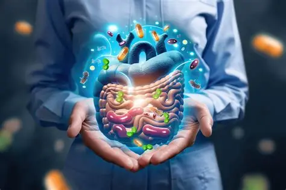

Donación de heces
El TMF depende de personas sanas que desean colaborar de forma altruista. La selección del donante es rigurosa para garantizar la seguridad del receptor.
Requisitos generales
- 18–50 años.
- Buena salud general.
- No haber tomado antibióticos recientemente.
- No padecer enfermedades gastrointestinales crónicas.
Contacto para donantes:
Formulario: Quiero ser donante
Formulario: Quiero ser donante
Donación de heces
¿Quién puede donar?
- Entre 18 y 50 años
- Buena salud general
- Sin antibióticos recientes ni enfermedad digestiva crónica
Evaluación del donante
- Cuestionario y entrevista
- Análisis de heces y sangre
- Exclusión de riesgos
Proceso de donación
- Recogida segura
- Procesamiento en laboratorio
- Conservación en el banco de heces
Una donación altruista hace posible el TMF
